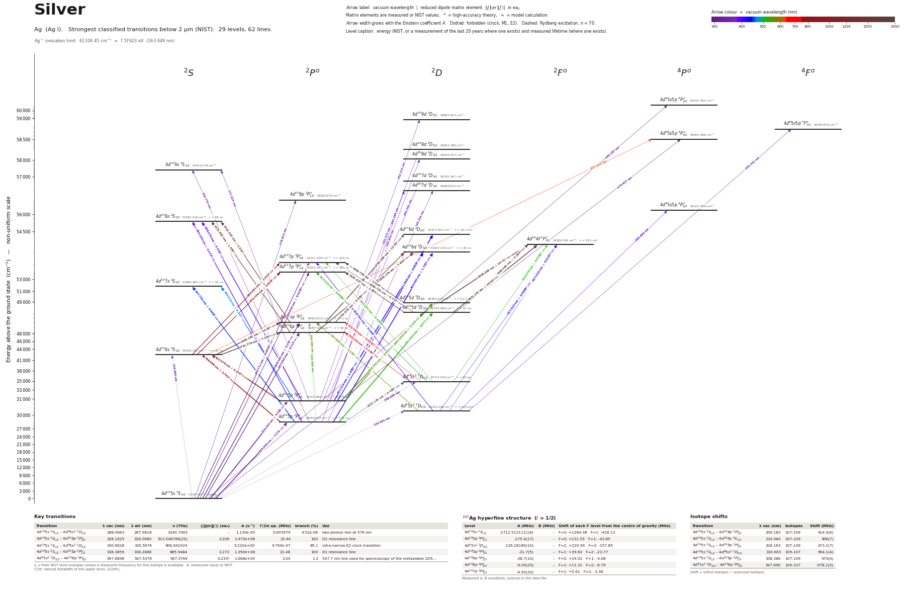

Silver energy level diagram
Energy levels and transitions of neutral silver (Ag I): the 62 strongest classified lines below 2 µm from the NIST Atomic Spectra Database and the 29 levels they connect, each line with its vacuum wavelength, frequency and, for 43 of them, the reduced dipole matrix element derived from the NIST transition rate. Measured lifetimes, transition rates, hyperfine constants and isotope shifts from the literature are included, each with its citation.
Hover a line or a level to isolate it, click to keep it selected. Scroll to zoom, drag to move.

Download: diagram (PDF) diagram (SVG) transitions (CSV) levels (CSV) source code

Key transitions of silver
| Transition | λ vac (nm) | λ air (nm) | ν (THz) | |⟨J‖er‖J′⟩| (ea₀) | A (s⁻¹) | Γ/2π up. (MHz) | branch (%) | Use |
|---|---|---|---|---|---|---|---|---|
| 4d105s 2S1/2 – 4d95s2 2D3/2 | 288.0663 | 287.9818 | 1040.7063 | – | 1.130e-05 | 0.003979 | 4.52e-08 | two-photon line at 576 nm |
| 4d105s 2S1/2 – 4d105p 2P°3/2 | 328.1625 | 328.0680 | 913.548766(20) | 3.206 | 1.473e+08 | 23.44 | 100 | D2 resonance line |
| 4d105s 2S1/2 – 4d95s2 2D5/2 | 330.6628 | 330.5676 | 906.641024 | – | 5.220e+00 | 9.764e-07 | 85.1 | ultra-narrow E2 clock transition |
| 4d105s 2S1/2 – 4d105p 2P°1/2 | 338.3859 | 338.2888 | 885.9484 | 2.272 | 1.350e+08 | 21.48 | 100 | D1 resonance line |
| 4d95s2 2D5/2 – 4d106p 2P°3/2 | 547.6898 | 547.5376 | 547.3764 | 0.233* | 1.668e+05 | 2.04 | 1.3 | 547.7 nm line used for spectroscopy of the metastable 2D5… |
λ, ν from NIST level energies unless a measured frequency for this isotope is available. A: measured value or NIST. Γ/2π: natural linewidth of the upper level, 1/(2πτ).
107Ag hyperfine structure (I = 1/2)
| Level | A (MHz) | B (MHz) | Shift of each F level from the centre of gravity (MHz) |
|---|---|---|---|
| 4d105s 2S1/2 | -1712.512111(18) | – | F=0: +1284.38 F=1: -428.13 |
| 4d105p 2P°1/2 | -175.4(17) | – | F=0: +131.55 F=1: -43.85 |
| 4d95s2 2D5/2 | -126.28180(10) | – | F=2: +220.99 F=3: -157.85 |
| 4d105p 2P°3/2 | -31.7(5) | – | F=1: +39.62 F=2: -23.77 |
| 4d106p 2P°1/2 | -38.7(10) | – | F=0: +29.02 F=1: -9.68 |
| 4d106p 2P°3/2 | -9.05(25) | – | F=1: +11.31 F=2: -6.79 |
| 4d107p 2P°3/2 | -4.50(20) | – | F=1: +5.62 F=2: -3.38 |
Measured A, B constants; sources in the data file.
Isotope shifts
| Transition | λ vac (nm) | Isotopes | Shift (MHz) |
|---|---|---|---|
| 4d105s 2S1/2 – 4d106p 2P°3/2 | 206.182 | 107-109 | 414.0(6) |
| 4d105s 2S1/2 – 4d106s 2S1/2 | 234.984 | 107-109 | 368(7) |
| 4d105s 2S1/2 – 4d105p 2P°3/2 | 328.163 | 107-109 | 473.2(7) |
| 4d105s 2S1/2 – 4d95s2 2D5/2 | 330.663 | 109-107 | 564.1(4) |
| 4d105s 2S1/2 – 4d105p 2P°1/2 | 338.386 | 107-109 | 473(4) |
| 4d95s2 2D5/2 – 4d106p 2P°3/2 | 547.690 | 109-107 | -978.1(5) |
Shift = ν(first isotope) − ν(second isotope).
Closed and nearly closed transitions of silver
| Transition | λ vacuum (nm) | Lower level | A (s⁻¹) | Leak per scattered photon | Photons before a leak | Where the leak goes |
|---|---|---|---|---|---|---|
| 4d105s 2S1/2 → 4d105p 2P°1/2 | 338.3859 | ground | 1.350e+08 measured | closed | – | no other level can be reached by electric-dipole decay |
| 4d105s 2S1/2 → 4d105p 2P°3/2 | 328.1625 | ground | 1.473e+08 measured | 1.09 × 10−8 from measured data | 9.17 × 107 | 4d95s2 2D5/2 1.09 × 10−8 (long-lived) |
A transition is closed when its upper level can decay only to the level it was excited from, so the atom keeps scattering photons. “closed”: among the levels NIST lists, no other level below the upper level has the opposite parity and |ΔJ| ≤ 1, so no other electric-dipole decay exists. Otherwise the leak is the sum of the branching ratios of the other decay lines of the upper level (or 1 − branching ratio where that of the line itself has been measured), and the number of photons is 1 / leak. “≥” and “≤”: at least one possible decay path has no listed rate, so the leak is a lower limit. These numbers are derived from the branching ratios, lifetimes and rates of this page, not measured as such; the tag names the weakest of the inputs, * marks theory and ≈ a model calculation. Listed: lines that start on the ground level or on a metastable level and leak at most 10 %, unless more than three possible decay paths have no listed rate. Fine-structure levels only: hyperfine and Zeeman dark states and forbidden decays without a listed rate are not considered. Select a line in the diagram for the full list of its leak channels.
Listed Ag transitions below 2 µm
| Lower level | Upper level | λ vacuum (nm) | λ air (nm) | ν (THz) | Type | |⟨J‖er‖J′⟩| (ea₀) | A (s⁻¹) | Branching (%) | Source of matrix element / A |
|---|---|---|---|---|---|---|---|---|---|
| 4d105s 2S1/2 | 4d95s5p 4P°1/2 | 165.1870 | – | 1814.8671 | E1 (intercombination) | – | – | – | – |
| 4d105s 2S1/2 | 4d95s5p 4P°3/2 | 170.9268 | – | 1753.9234 | E1 (intercombination) | – | – | – | – |
| 4d105s 2S1/2 | 4d108p 2P°1/2 | 176.6133 | – | 1697.4512 | E1 | – | – | – | – |
| 4d105s 2S1/2 | 4d107p 2P°3/2 | 184.7708 | – | 1622.5100 | E1 | 0.087 theory | 6.078e+05 theory | 15.5 | Jönsson, Sahoo, Caliskan, Amarsi, arXiv:2602.20711 (2026, A&A in press), Table A.2 (FSMRC… |
| 4d105s 2S1/2 | 4d107p 2P°1/2 | 185.0446 | – | 1620.1095 | E1 | 0.032 theory | 1.637e+05 theory | 4.67 | Jönsson, Sahoo, Caliskan, Amarsi, arXiv:2602.20711 (2026, A&A in press), Table A.2 (FSMRC… |
| 4d105s 2S1/2 | 4d106p 2P°3/2 | 206.1821 | 206.1162 | 1454.0177 | E1 | 0.232 NIST | 3.100e+06 NIST | 24.2 | NIST ASD (accuracy D) |
| 4d105s 2S1/2 | 4d106p 2P°1/2 | 207.0505 | 206.9844 | 1447.9198 | E1 | 0.115 NIST | 1.500e+06 NIST | 14.2 | NIST ASD (accuracy D) |
| 4d105s 2S1/2 | 4d106s 2S1/2 | 234.9837 | 234.9118 | 1275.8012 | E2 | – | – | – | – |
| 4d105s 2S1/2 | 4d95s2 2D3/2 | 288.0663 | 287.9818 | 1040.7063 | M1 | – | 1.130e-05 theory | 4.52e-08 | Dzuba, Allehabi, Flambaum, Li, Schiller, Phys. Rev. A 103, 022822 (2021), Table II (M1 on… |
| 4d105s 2S1/2 | 4d105p 2P°3/2 | 328.1625 | 328.0680 | 913.5488 | E1 | 3.206 measured | 1.473e+08 measured | 100 | Jönsson, Sahoo, Caliskan, Amarsi, arXiv:2602.20711 (2026, A&A in press), Table A.4 (lifet… |
| 4d105s 2S1/2 | 4d95s2 2D5/2 | 330.6628 | 330.5676 | 906.6410 | E2 | – | 5.220e+00 theory | 85.1 | Dzuba, Allehabi, Flambaum, Li, Schiller, Phys. Rev. A 103, 022822 (2021), Table II (E2, C… |
| 4d105s 2S1/2 | 4d105p 2P°1/2 | 338.3859 | 338.2888 | 885.9484 | E1 | 2.272 measured | 1.350e+08 measured | 100 | Jönsson, Sahoo, Caliskan, Amarsi, arXiv:2602.20711 (2026, A&A in press), Table A.4 (lifet… |
| 4d95s2 2D5/2 | 4d95s5p 4F°7/2 | 350.2924 | 350.1922 | 855.8349 | E1 (intercombination) | – | – | – | – |
| 4d105p 2P°1/2 | 4d108d 2D3/2 | 350.9029 | 350.8025 | 854.3460 | E1 | – | – | – | – |
| 4d105p 2P°3/2 | 4d109d 2D5/2 | 352.2127 | 352.1120 | 851.1689 | E1 | – | – | – | – |
| 4d105p 2P°1/2 | 4d109s 2S1/2 | 358.7699 | 358.6675 | 835.6121 | E1 | – | – | – | – |
| 4d105p 2P°3/2 | 4d108d 2D5/2 | 362.5721 | 362.4687 | 826.8493 | E1 | – | – | – | – |
| 4d105p 2P°1/2 | 4d107d 2D3/2 | 368.3543 | 368.2495 | 813.8698 | E1 | – | – | – | – |
| 4d105p 2P°3/2 | 4d109s 2S1/2 | 371.0243 | 370.9188 | 808.0130 | E1 | – | – | – | – |
| 4d105p 2P°3/2 | 4d107d 2D5/2 | 381.2021 | 381.0940 | 786.4396 | E1 | – | – | – | – |
| 4d105p 2P°3/2 | 4d107d 2D3/2 | 381.2840 | 381.1758 | 786.2707 | E1 | – | – | – | – |
| 4d105p 2P°1/2 | 4d108s 2S1/2 | 384.1841 | 384.0751 | 780.3354 | E1 | 0.370 theory | 2.446e+06 theory | 24 | Jönsson, Sahoo, Caliskan, Amarsi, arXiv:2602.20711 (2026, A&A in press), Table A.2 (FSMRC… |
| 4d95s2 2D5/2 | 4d95s5p 4P°5/2 | 384.8938 | 384.7847 | 778.8965 | E1 (intercombination) | – | – | – | – |
| 4d105p 2P°3/2 | 4d108s 2S1/2 | 398.2702 | 398.1576 | 752.7363 | E1 | 0.519 theory | 4.320e+06 theory | 42.3 | Jönsson, Sahoo, Caliskan, Amarsi, arXiv:2602.20711 (2026, A&A in press), Table A.2 (FSMRC… |
| 4d105p 2P°1/2 | 4d106d 2D3/2 | 405.6620 | 405.5475 | 739.0202 | E1 | 1.793 theory | 2.439e+07 theory | 63.4 | Jönsson, Sahoo, Caliskan, Amarsi, arXiv:2602.20711 (2026, A&A in press), Table A.2 (FSMRC… |
| 4d95s2 2D5/2 | 4d104f 2F°7/2 | 417.3197 | 417.2021 | 718.3761 | E1 | 0.0696 theory | 1.688e+04 theory | 0.118 | Jönsson, Sahoo, Caliskan, Amarsi, arXiv:2602.20711 (2026, A&A in press), Table A.2 (MCDHF… |
| 4d95s2 2D5/2 | 4d104f 2F°5/2 | 417.3199 | 417.2023 | 718.3756 | E1 | 0.0157 theory | 1.146e+03 theory | 0.00801 | Jönsson, Sahoo, Caliskan, Amarsi, arXiv:2602.20711 (2026, A&A in press), Table A.2 (MCDHF… |
| 4d95s2 2D5/2 | 4d107p 2P°3/2 | 418.7813 | 418.6634 | 715.8687 | E1 | 0.169 theory | 1.971e+05 theory | 5.03 | Jönsson, Sahoo, Caliskan, Amarsi, arXiv:2602.20711 (2026, A&A in press), Table A.2 (MCDHF… |
| 4d105p 2P°3/2 | 4d106d 2D5/2 | 421.2140 | 421.0954 | 711.7342 | E1 | 2.406 theory | 2.616e+07 theory | 78.6 | Jönsson, Sahoo, Caliskan, Amarsi, arXiv:2602.20711 (2026, A&A in press), Table A.2 (FSMRC… |
| 4d105p 2P°3/2 | 4d106d 2D3/2 | 421.3994 | 421.2808 | 711.4211 | E1 | 0.808 theory | 4.419e+06 theory | 11.5 | Jönsson, Sahoo, Caliskan, Amarsi, arXiv:2602.20711 (2026, A&A in press), Table A.2 (FSMRC… |
| 4d105p 2P°1/2 | 4d107s 2S1/2 | 447.7296 | 447.6040 | 669.5837 | E1 | 0.688 theory | 5.343e+06 theory | 28.3 | Jönsson, Sahoo, Caliskan, Amarsi, arXiv:2602.20711 (2026, A&A in press), Table A.2 (FSMRC… |
| 4d105p 2P°3/2 | 4d107s 2S1/2 | 466.9777 | 466.8470 | 641.9846 | E1 | 0.967 theory | 9.303e+06 theory | 49.3 | Jönsson, Sahoo, Caliskan, Amarsi, arXiv:2602.20711 (2026, A&A in press), Table A.2 (FSMRC… |
| 4d95s2 2D3/2 | 4d104f 2F°5/2 | 513.0704 | 512.9275 | 584.3106 | E1 | 0.0783 theory | 1.533e+04 theory | 0.107 | Jönsson, Sahoo, Caliskan, Amarsi, arXiv:2602.20711 (2026, A&A in press), Table A.2 (MCDHF… |
| 4d95s2 2D3/2 | 4d107p 2P°3/2 | 515.2811 | 515.1376 | 581.8037 | E1 | 0.0479 theory | 8.511e+03 theory | 0.217 | Jönsson, Sahoo, Caliskan, Amarsi, arXiv:2602.20711 (2026, A&A in press), Table A.2 (MCDHF… |
| 4d95s2 2D3/2 | 4d107p 2P°1/2 | 517.4159 | 517.2719 | 579.4032 | E1 | 0.0999 theory | 7.304e+04 theory | 2.08 | Jönsson, Sahoo, Caliskan, Amarsi, arXiv:2602.20711 (2026, A&A in press), Table A.2 (MCDHF… |
| 4d105p 2P°1/2 | 4d105d 2D3/2 | 521.0528 | 520.9078 | 575.3590 | E1 | 4.577 NIST | 7.500e+07 NIST | 82.5 | NIST ASD (accuracy D) |
| 4d105p 2P°1/2 | 4d106p 2P°1/2 | 533.4657 | 533.3173 | 561.9714 | M1 | – | – | – | – |
| 4d105p 2P°3/2 | 4d105d 2D5/2 | 546.7004 | 546.5485 | 548.3670 | E1 | 6.451 NIST | 8.600e+07 NIST | 100 | NIST ASD (accuracy D) |
| 4d105p 2P°3/2 | 4d105d 2D3/2 | 547.3063 | 547.1543 | 547.7599 | E1 | 2.129 NIST | 1.400e+07 NIST | 15.4 | NIST ASD (accuracy D) |
| 4d95s2 2D5/2 | 4d106p 2P°3/2 | 547.6898 | 547.5376 | 547.3764 | E1 | 0.233 theory | 1.668e+05 theory | 1.3 | Jönsson, Sahoo, Caliskan, Amarsi, arXiv:2602.20711 (2026, A&A in press), Table A.2 (MCDHF… |
| 4d105p 2P°3/2 | 4d106p 2P°3/2 | 554.6882 | 554.5342 | 540.4702 | M1 | – | – | – | – |
| 4d106s 2S1/2 | 4d95s5p 4P°3/2 | 627.0206 | 626.8472 | 478.1222 | E1 (intercombination) | – | – | – | – |
| 4d95s2 2D3/2 | 4d106p 2P°3/2 | 725.3428 | 725.1430 | 413.3114 | E1 | 0.0615 theory | 5.026e+03 theory | 0.0392 | Jönsson, Sahoo, Caliskan, Amarsi, arXiv:2602.20711 (2026, A&A in press), Table A.2 (MCDHF… |
| 4d95s2 2D3/2 | 4d106p 2P°1/2 | 736.2047 | 736.0019 | 407.2135 | E1 | 0.128 theory | 4.137e+04 theory | 0.393 | Jönsson, Sahoo, Caliskan, Amarsi, arXiv:2602.20711 (2026, A&A in press), Table A.2 (MCDHF… |
| 4d105p 2P°1/2 | 4d106s 2S1/2 | 768.9889 | 768.7773 | 389.8528 | E1 | 2.791 theory | 1.735e+07 theory | 38.2 | Jönsson, Sahoo, Caliskan, Amarsi, arXiv:2602.20711 (2026, A&A in press), Table A.2 (FSMRC… |
| 4d105p 2P°3/2 | 4d106s 2S1/2 | 827.5760 | 827.3486 | 362.2537 | E1 | 4.216 theory | 3.177e+07 theory | 69.9 | Jönsson, Sahoo, Caliskan, Amarsi, arXiv:2602.20711 (2026, A&A in press), Table A.2 (FSMRC… |
| 4d106s 2S1/2 | 4d107p 2P°3/2 | 864.6808 | 864.4434 | 346.7088 | E1 | 1.342 theory | 1.411e+06 theory | 36 | Jönsson, Sahoo, Caliskan, Amarsi, arXiv:2602.20711 (2026, A&A in press), Table A.2 (FSMRC… |
| 4d106s 2S1/2 | 4d107p 2P°1/2 | 870.7093 | 870.4702 | 344.3083 | E1 | 0.828 theory | 1.052e+06 theory | 30 | Jönsson, Sahoo, Caliskan, Amarsi, arXiv:2602.20711 (2026, A&A in press), Table A.2 (FSMRC… |
| 4d106p 2P°1/2 | 4d108s 2S1/2 | 1372.9022 | 1372.5269 | 218.3640 | E1 | 1.450 theory | 8.231e+05 theory | 8.07 | Jönsson, Sahoo, Caliskan, Amarsi, arXiv:2602.20711 (2026, A&A in press), Table A.2 (FSMRC… |
| 4d106p 2P°3/2 | 4d108s 2S1/2 | 1412.3425 | 1411.9565 | 212.2661 | E1 | 2.012 theory | 1.456e+06 theory | 14.3 | Jönsson, Sahoo, Caliskan, Amarsi, arXiv:2602.20711 (2026, A&A in press), Table A.2 (FSMRC… |
| 4d106s 2S1/2 | 4d106p 2P°3/2 | 1682.1810 | 1681.7216 | 178.2165 | E1 | 10.05 theory | 1.074e+07 theory | 83.8 | Jönsson, Sahoo, Caliskan, Amarsi, arXiv:2602.20711 (2026, A&A in press), Table A.2 (FSMRC… |
| 4d106p 2P°1/2 | 4d106d 2D3/2 | 1693.2756 | 1692.8132 | 177.0488 | E1 | 7.436 theory | 5.769e+06 theory | 15 | Jönsson, Sahoo, Caliskan, Amarsi, arXiv:2602.20711 (2026, A&A in press), Table A.2 (FSMRC… |
| 4d106s 2S1/2 | 4d106p 2P°1/2 | 1741.7782 | 1741.3026 | 172.1186 | E1 | 7.203 theory | 9.947e+06 theory | 94.5 | Jönsson, Sahoo, Caliskan, Amarsi, arXiv:2602.20711 (2026, A&A in press), Table A.2 (FSMRC… |
| 4d106p 2P°3/2 | 4d106d 2D5/2 | 1750.4694 | 1749.9914 | 171.2640 | E1 | 10.63 theory | 7.119e+06 theory | 21.4 | Jönsson, Sahoo, Caliskan, Amarsi, arXiv:2602.20711 (2026, A&A in press), Table A.2 (FSMRC… |
| 4d106p 2P°3/2 | 4d106d 2D3/2 | 1753.6757 | 1753.1969 | 170.9509 | E1 | 3.560 theory | 1.190e+06 theory | 3.09 | Jönsson, Sahoo, Caliskan, Amarsi, arXiv:2602.20711 (2026, A&A in press), Table A.2 (FSMRC… |
| 4d105d 2D3/2 | 4d104f 2F°5/2 | 1831.2469 | 1830.7470 | 163.7095 | E1 | 15.56 theory | 1.331e+07 theory | 93 | Jönsson, Sahoo, Caliskan, Amarsi, arXiv:2602.20711 (2026, A&A in press), Table A.2 (FSMRC… |
| 4d105d 2D5/2 | 4d104f 2F°7/2 | 1838.0576 | 1837.5558 | 163.1029 | E1 | 18.71 theory | 1.427e+07 theory | 100 | Jönsson, Sahoo, Caliskan, Amarsi, arXiv:2602.20711 (2026, A&A in press), Table A.2 (FSMRC… |
| 4d105d 2D5/2 | 4d104f 2F°5/2 | 1838.0630 | 1837.5612 | 163.1024 | E1 | 4.283 theory | 9.975e+05 theory | 6.97 | Jönsson, Sahoo, Caliskan, Amarsi, arXiv:2602.20711 (2026, A&A in press), Table A.2 (FSMRC… |
| 4d105d 2D3/2 | 4d107p 2P°3/2 | 1859.7250 | 1859.2173 | 161.2026 | E1 | 0.717 theory | 4.049e+04 theory | 1.03 | Jönsson, Sahoo, Caliskan, Amarsi, arXiv:2602.20711 (2026, A&A in press), Table A.2 (FSMRC… |
| 4d105d 2D5/2 | 4d107p 2P°3/2 | 1866.7551 | 1866.2455 | 160.5955 | E1 | 2.228 theory | 3.865e+05 theory | 9.86 | Jönsson, Sahoo, Caliskan, Amarsi, arXiv:2602.20711 (2026, A&A in press), Table A.2 (FSMRC… |
| 4d105d 2D3/2 | 4d107p 2P°1/2 | 1887.8368 | 1887.3215 | 158.8021 | E1 | 1.853 theory | 5.170e+05 theory | 14.7 | Jönsson, Sahoo, Caliskan, Amarsi, arXiv:2602.20711 (2026, A&A in press), Table A.2 (FSMRC… |
| 4d105p 2P°1/2 | 4d95s2 2D3/2 | 1937.1702 | 1936.6414 | 154.7579 | E1 | 0.485 theory | 1.637e+04 theory | 65.5 | Jönsson, Sahoo, Caliskan, Amarsi, arXiv:2602.20711 (2026, A&A in press), Table A.2 (MCDHF… |
Reduced dipole matrix elements follow the convention A = ω³|d|²/(3πε₀ħc³(2J′+1)), with J′ the upper level. Tags show where a number comes from: measured, NIST compilation, high-accuracy theory, or a model calculation.
Ag energy levels
Ag⁺ ionisation limit 61106.45 cm⁻¹ = 7.57623 eV (163.649 nm)
Sources
- Badr, Plimmer, Juncar, Himbert, Louyer, Knight, Phys. Rev. A 74, 062509 (2006), abstract
- Bengtsson, Larsson, Svanberg, Phys. Rev. A 42, 5457 (1990), abstract
- Bengtsson, Larsson, Svanberg, Phys. Rev. A 42, 5457 (1990), abstract (magnitude |a| = 38.…
- Bengtsson, Larsson, Svanberg, Phys. Rev. A 42, 5457 (1990), abstract (magnitude |a| = 9.0…
- Dzuba, Allehabi, Flambaum, Li, Schiller, Phys. Rev. A 103, 022822 (2021), Table II (E2, C…
- Dzuba, Allehabi, Flambaum, Li, Schiller, Phys. Rev. A 103, 022822 (2021), Table II (M1 on…
- Jönsson, Sahoo, Caliskan, Amarsi, arXiv:2602.20711 (2026, A&A in press), Table 6; origina…
- Jönsson, Sahoo, Caliskan, Amarsi, arXiv:2602.20711 (2026, A&A in press), Table A.2 (FSMRC…
- Jönsson, Sahoo, Caliskan, Amarsi, arXiv:2602.20711 (2026, A&A in press), Table A.2 (MCDHF…
- Jönsson, Sahoo, Caliskan, Amarsi, arXiv:2602.20711 (2026, A&A in press), Table A.2 (MCDHF…
- Jönsson, Sahoo, Caliskan, Amarsi, arXiv:2602.20711 (2026, A&A in press), Table A.2 (MCDHF…
- Jönsson, Sahoo, Caliskan, Amarsi, arXiv:2602.20711 (2026, A&A in press), Table A.2 (MCDHF…
- Jönsson, Sahoo, Caliskan, Amarsi, arXiv:2602.20711 (2026, A&A in press), Table A.4 (FSMRC…
- Jönsson, Sahoo, Caliskan, Amarsi, arXiv:2602.20711 (2026, A&A in press), Table A.4 (lifet…
- Jönsson, Sahoo, Caliskan, Amarsi, arXiv:2602.20711 (2026, A&A in press), Table A.4 and te…
- Jönsson, Sahoo, Caliskan, Amarsi, arXiv:2602.20711 (2026, A&A in press), Table A.4; origi…
- Jönsson, Sahoo, Caliskan, Amarsi, arXiv:2602.20711 (2026, A&A in press), Table A.4; origi…
- Jönsson, Sahoo, Caliskan, Amarsi, arXiv:2602.20711 (2026, A&A in press), Table A.4; origi…
- NIST ASD
- NIST ASD level energies
- Ohayon, Padilla-Castillo, Wright, Meijer, Sahoo, Phys. Rev. Research 6, 033040 (2024), Ta…
- Porsev, Filin, Cheung, Safronova, Phys. Rev. A 111, 062809 (2025) quoting Badr, Plimmer, …
- Skripnikov, van den Borne, Athanasakis-Kaklamanakis, Penyazkov, de Groote, arXiv:2609.401…
- Skripnikov, van den Borne, Athanasakis-Kaklamanakis, Penyazkov, de Groote, arXiv:2609.401…
- Skripnikov, van den Borne, Athanasakis-Kaklamanakis, Penyazkov, de Groote, arXiv:2609.401…
Hyperfine constants: I = 1/2 for both isotopes, so only A exists (B = 0); A is negative (negative nuclear moments). Isotope shifts are nu(first) - nu(second), centre of gravity unless stated. rme_J_ea0 is |<J||er||J'>| in e*a0 with A = 2.02613e18 |d|^2 / (lambda_vac[Angstrom]^3 (2J'+1)), J' = upper level; the FSMRCC / MCDHF matrix elements of Jönsson et al. 2026 and the amplitudes of Dzuba et al. 2021 use the same convention (checked: 3.275 e*a0 reproduces their A = 1.537e8 s^-1 for 328 nm). For the two resonance lines the primary A_s and rme are derived from the Carlsson et al. 1990 lifetimes (delayed-coincidence, 0.5 % accuracy), with theory under alternatives; all other A_s / rme are theory (method 'theory') and are meant only for lines where NIST has no value. The clock-transition frequency of Badr et al. 2006 is for the natural isotope mixture; per-isotope values are derived with NIST abundances (frequency_THz_107, frequency_THz_109). Extra keys beyond the schema: ionization_energy, g_J_ratio_to_Cs133, frequency_THz_natural, hyperfine_line_frequencies_MHz, E2_amplitude_au, lifetime_alternatives. Natural linewidths Gamma/2pi = 23.4 MHz (D2) and 21.5 MHz (D1) used by the MOT papers follow from the lifetimes above. The 5s-6s entry (type E2) exists only to carry the measured isotope shift.
Atoms with measured data
- Lithium-632 levels, 85 lines
- Lithium-732 levels, 85 lines
- Beryllium-917 levels, 26 lines
- Sodium-2336 levels, 106 lines
- Magnesium-2418 levels, 61 lines
- Magnesium-2518 levels, 61 lines
- Potassium-3934 levels, 84 lines
- Potassium-4034 levels, 84 lines
- Potassium-4134 levels, 84 lines
- Calcium-4035 levels, 61 lines
- Calcium-4335 levels, 61 lines
- Chromium-5256 levels, 87 lines
- Chromium-5356 levels, 87 lines
- Rubidium-8536 levels, 94 lines
- Rubidium-8736 levels, 94 lines
- Strontium-8440 levels, 70 lines
- Strontium-8640 levels, 70 lines
- Strontium-8740 levels, 70 lines
- Strontium-8840 levels, 70 lines
- Cadmium-11115 levels, 21 lines
- Cadmium-11315 levels, 21 lines
- Cadmium-11415 levels, 21 lines
- Caesium-13331 levels, 79 lines
- Barium-13744 levels, 89 lines
- Barium-13844 levels, 89 lines
- Dysprosium-16139 levels, 55 lines
- Dysprosium-16239 levels, 55 lines
- Dysprosium-16339 levels, 55 lines
- Dysprosium-16439 levels, 55 lines
- Erbium-16673 levels, 90 lines
- Erbium-16773 levels, 90 lines
- Erbium-16873 levels, 90 lines
- Thulium-16972 levels, 73 lines
- Ytterbium-17118 levels, 26 lines
- Ytterbium-17318 levels, 26 lines
- Ytterbium-17418 levels, 26 lines
- Mercury-19927 levels, 47 lines
- Mercury-20127 levels, 47 lines
- Mercury-20227 levels, 47 lines